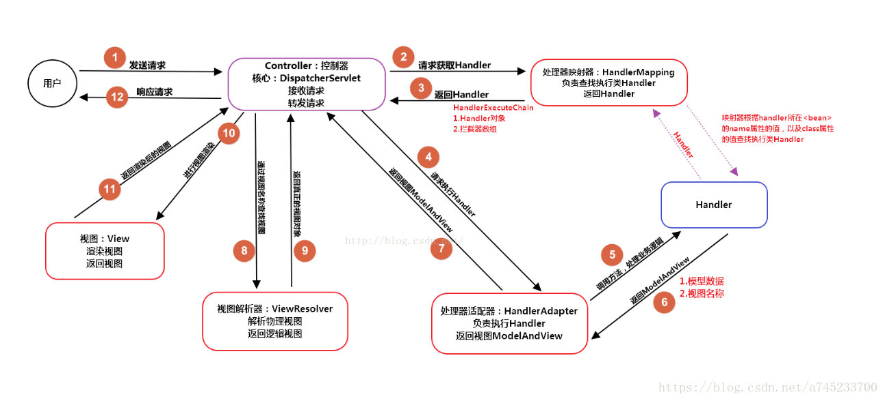

1.SpringMVC：
SpringMVC是基于java的实现MVC设计模式的请求驱动类型的轻量级的web框架，通常把model，view，controller将web层进行职责解耦，
把复杂的web应用分层逻辑清晰的几部分，简化开发，减少错误，方便组内人员之间的配合。
SpringMVC框架和其他框架一样都是请求驱动，并设计围绕一个能够分发请求到控制器以及提供加快web应用开发功能的核心servlet（前端控制器）。
2.SpringMVC 的访问流程：

（1）用户发送的请求交给前端控制器，前端控制器不进行处理，而是委托给其他的解析器进行处理。
（2）前端控制器将请求转交给映射器，映射器根据请求的url找到相对应的Controller控制器，返回给前端控制器。
（3）前端控制器将请求交给适配器，适配器根据适配的结果调用真正处理器的功能处理方法，完成功能处理，并返回modelandview给前端控制器。
（4）前端控制器把请求modelandview的逻辑视图名交给视图解析器，视图解析器把逻辑视图名解析成具体的view，返回真正的视图对象。
（5）view根据传进来model模型数据进行渲染，返回渲染后的视图对象给前端控制器。
（6）前端控制器响应请求。
3.过滤器和拦截器：
（1）过滤器：依赖于servlet容器，在实现基于函数回调，可以对几乎所有的请求进行过滤，一个过滤器只能在web容器初始化时调用，
只初始化一次，以后就可以拦截相关请求，只有当web容器停止或重新部署的时候才能销毁。
（2）拦截器：依赖于web框架，在SpringMVC中就是依赖于SpringMVC框架，在实现基于java的反射机制，属于面向切面编程（AOP）的一种应用，
只能够对Controller请求进行拦截，对一些像直接访问静态资源的请求没有办法拦截。
推荐：springMVC面试题：https://blog.csdn.net/a745233700/article/details/80963758